Jalil Arfaoui
Artisan logiciel : Création - Conseil - Formation
👓 Ce que je fais
- Je code soigneusement des applications bien pensées qui répondent à des besoins réels
- Je mène mon équipe vers les meilleures solutions et les implémentations les plus efficaces pour chaque cas d'usage
💎 Mes points forts
- Écrire du code stable, opérationnel, maintenable, évolutif et bien testé
- Apprendre, et transmettre
- Travailler en équipe
- Participer à l'amélioration de l'équipe en soulevant les problèmes et en proposant des solutions
- Autonomie : Savoir ce que j'ai à faire et le faire
☯ Mes valeurs
- Software Craftsmanship
- Être fier de son travail, mais sans égo
- Autogestion, autonomie et responsabilité
- Approche Domain Driven Design
- Organisation agile : Itération et amélioration continue
🎁 Ce que j'offre
- 18 ans d'expérience à concevoir des systèmes logiciels
- Une forte implication dans la qualité et l'utilité de mes réalisations
- Développement centré sur l'utilisateur
🔭 Ce que je recherche
- Une mission dans le sens de l'intérêt général
- Un impact social et/ou environnemental positif
- Idéalement à but non lucratif
- Idéalement open-source voire logiciel libre
- Une bonne équipe qui veut élever le niveau
Contactons-nous !
 
